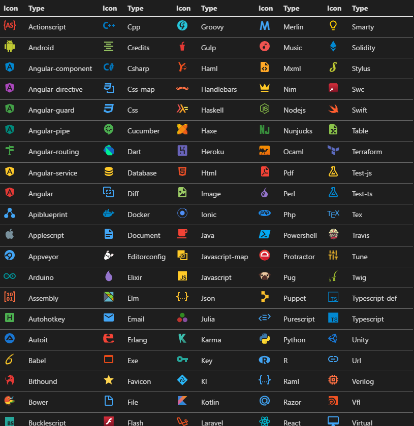
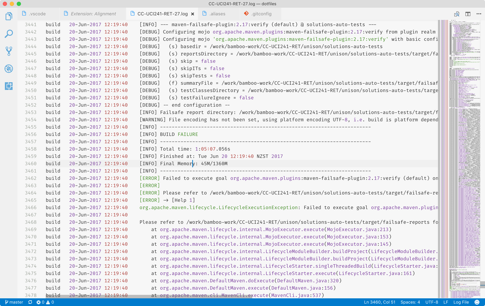
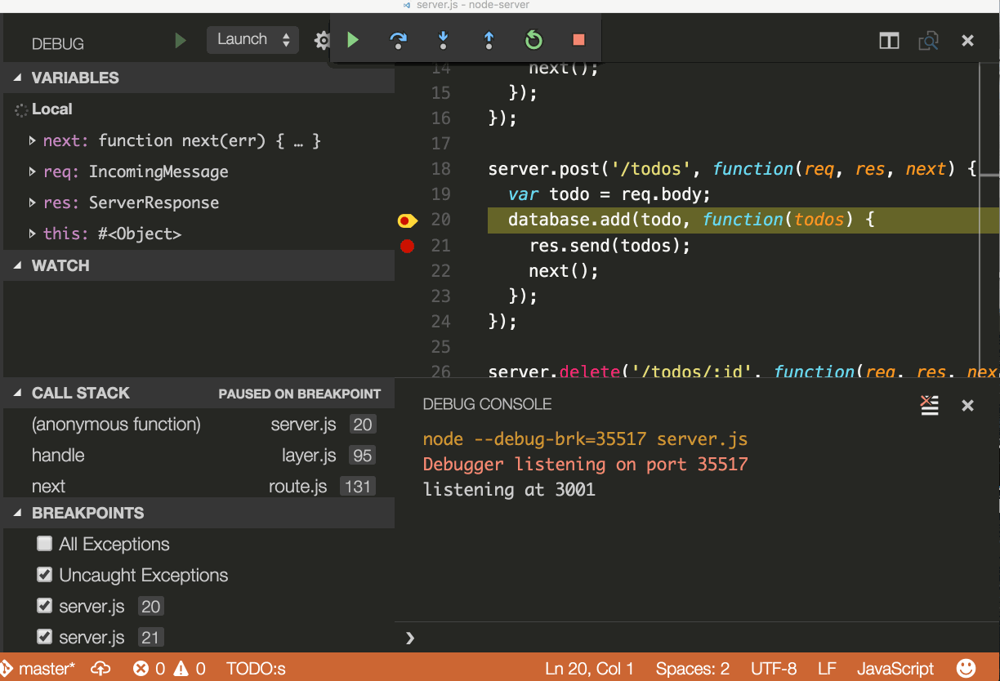

VS Code and Shell
Tips and tricks
by Anton Efimov
Why VS Code
- Extensions and customisation
- Integrated GIT
- Status panel
- Integrated terminal
- Ligature fonts
- Open source
- Personal preferences
Customisation
- Extensions
- Alebaster Theme
- Material icon pack
- FiraCode
Extensions
Extensions
- Recommendations
- Popular extensions
- Enable/disable extensions
Alebaster theme
- Minimal amount of highlighting
- Does not highlight standard language keywords (if, else, function etc.)
- Highlights comments
- No font variations (bold, italic)
Material Icon Theme
FiraCode
Text formatting
- Log File highlighter
- Text Alignment
- Readme preview
- Copying/moving lines
- Code formatting
- Trimming trailing spaces
- Selections
- Commenting out and back
Log file highlighter
Text Alignment
⌘ ⇧ P → Align
⌥ =
Readme preview
⌘ K, V
Copying lines
⌥ ⇧ ↓
⌥ ⇧ ↑
Moving lines
⌥ ↓
⌥ ↑
Code formatting
⌘ K, ⌘ F
Trimming white spaces
⌘ K, ⌘ X
Selections
⌘ I

⌥ ⌘ ↑
⌥ ⌘ ↓
Selections
⌘ D → ⌘ ⇧ L
Comments
⌘ /
Sensible to language/syntax
Productivity
- Command palette
- Quick navigation
- Refactoring, peek and references
- Lint
- Key bindings and Settings files
- CLI tool
Command palette
⌘ ⇧ P
Quick navigation
⌘ P
Peek
⌥ F12
Go to definition
F12
Find all references
⇧ F12
Renaming
F2
Linting
Linting
“Linting is the process of running a program that will analyse code for potential errors. ”
Markdownlint
Markdownlint
"markdownlint.config": {
"MD013": false,
"MD014": false,
"MD024": false,
"MD033": false,
"MD040": false,
"MD007": { "indent": 4 }
},
Settings
Settings
Snippets
- Snippets in marketplace
- Custom snippets
Snippets
Snippets
Debugging tool
Integrated git
- Diffs
- Branches
- Staging and committing
- Merge conflicts
Diffs
Branches
Staging and committing
Merge conflicts

Git Lens
Integrated terminal
CLI tool
Shells
- Fish
- zsh
- oh-my-zsh
- Pluggins
- Themes
Fish
- Autosuggestions
- Colouring
- Scripting
- Syntax highlighting
- Better tab completions
om-my-zsh
- Plugins
- Themes
om-my-zsh
- git - adds aliases
- brew - adds aliases
- copydir - copies current directory’s path to the clipboard
- z - tracks your most used directories, based on ‘frecency'.
$ > z solution - osx - see next slide
om-my-zsh
Aliases
Orion specific
alias rdep="rgrav deploy -R unison_frontend:0 -R unison_backend:0 -R unison_haproxy:0 -R connect:0 -p ec2"
alias rinv="rgrav invoke -p ec2"
$ > rdepMore examples
# Recursively delete `.DS_Store` files and Clean up LaunchServices to remove duplicates in the “Open With” menu
alias cleanup="/System/Library/Frameworks/CoreServices.framework/Frameworks/LaunchServices.framework/Support/lsregister -kill -r -domain local -domain system -domain user && killall Finder && find . -type f -name '*.DS_Store' -ls -delete"
# Get macOS Software Updates, and update installed Ruby gems, Homebrew and their installed packages
alias update='sudo softwareupdate -i -a; brew update; brew upgrade; brew cleanup; gem update; gem cleanup; npm update'
Aliases
To see your current aliases
$ > aliasiTerm
- FiraCode (only for 3.1)
dotfiles
- A way to organise your settings and apps
- Can and should be stored in git
- Can and should be forked
Links
- VS Code, other tips and tricks and awesome-vscode
- Alebaster theme, icons and FiraCode
- zsh, fish, oh-my-zsh (+ plugins and themes)
- iTerm
- My dotfiles, Craig's ones and a collection of other people's
Tools
This presentation was made using the following tools:
THE END
- This presentation's source code
- Export PDF of this presentation (Chrome only)
- Thanks for watching